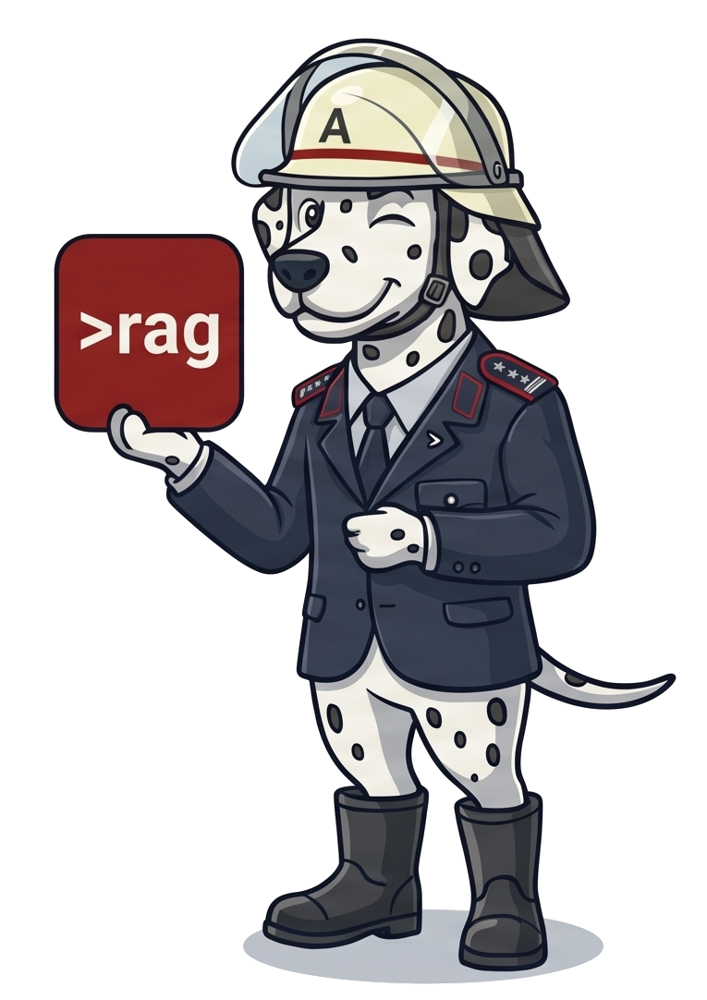
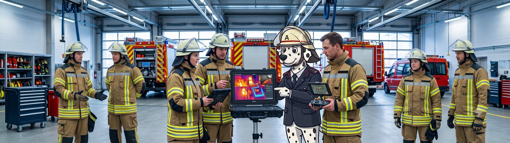
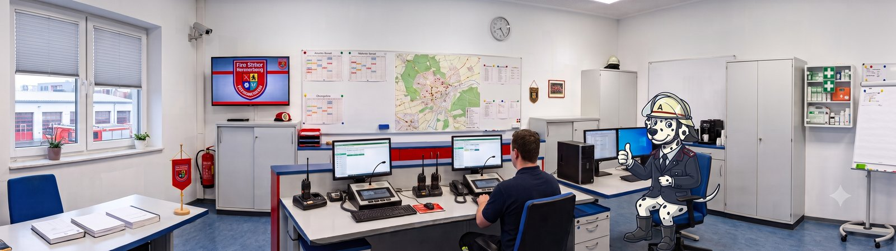
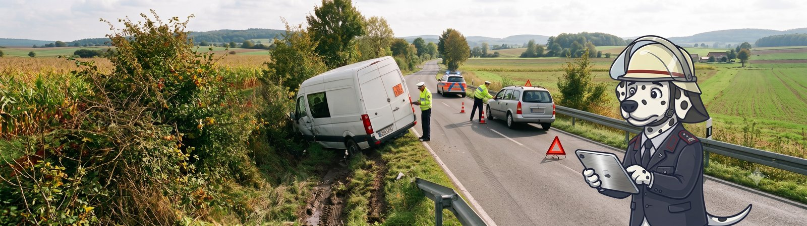
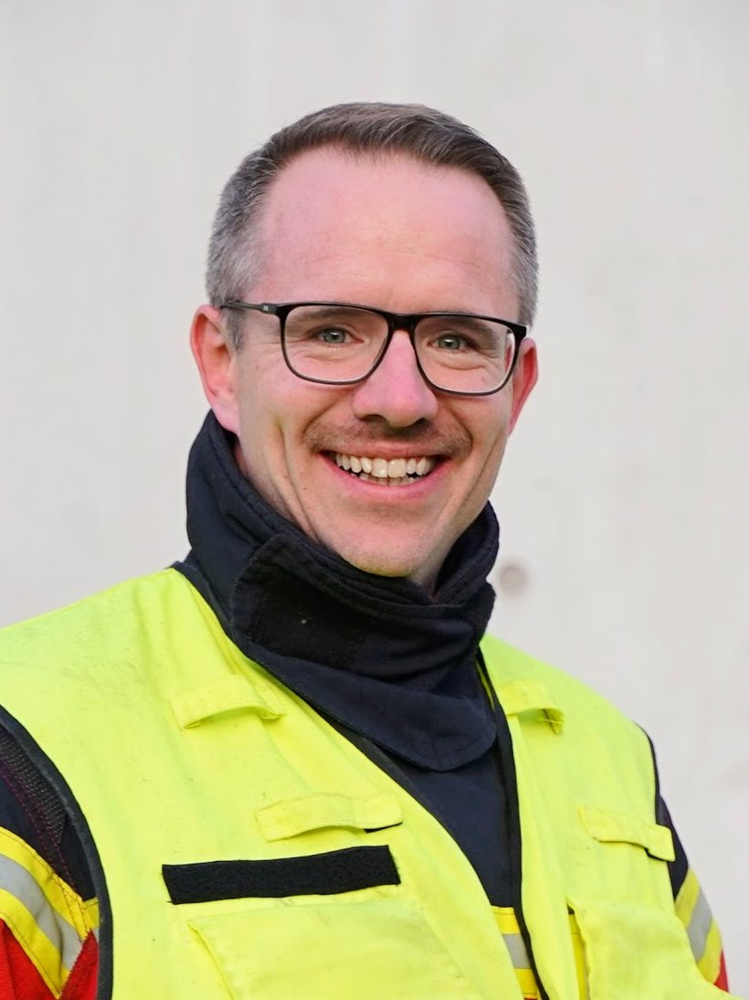

brandmeister.ai versorgt Ihre KI mit Fachwissen und Feuerwehrrecht.
Aus der Feuerwehr für die Feuerwehr.
Plug-and-play mit allen gängigen KI-Systemen.
brandmeister.ai ist eine modulare Erweiterung, mit der Sie jede gängige KI mit Feuerwehrkompetenz befähigen können.
Lernen Sie brandmeister.ai kennen:


Den Unterschied macht nicht die Verpackung, sondern ein präzises und validiertes Quellenpaket, das der KI zu jeder Frage vorliegt.
Allgemeine Assistenten antworten aus ihrem breiten Modellwissen, der Websuche oder dem, was Sie als Dokument angehängt haben – das bringt oft 80 %. Aber für die kritischen Punkte fehlen Nachvollziehbarkeit, Genauigkeit und Disziplin: Beim exakten, aktuellen Vorschriftentext aus Feuerwehrgesetz, Feuerwehrdienstvorschrift oder Ortssatzung stößt dieser Ansatz an seine Grenzen. Bei sicherheitsrelevanten Aufgaben ein echtes Risiko.
Über das paragrafengenaue Kontextmanagement von RAGSource kommt zu jeder Frage der originale, aktuelle Text in den Kontext – mit Fundstelle, von der FwDV über das Landes-Feuerwehrgesetz bis zur Ortssatzung. Dazu kuratierte Praxis-Skills für Einsatztaktik und Ausbildung sowie eine umfassende Gefahrstoffdatenbank. Gebaut für Aufgaben in der Feuerwehr – mit Wortlaut statt Wahrscheinlichkeit. Jede Fundstelle führt zur Originalquelle.
Ein starkes Übungsszenario – gerade weil der Stoff unspektakulär aussieht. Kaliumpermanganat ist ein Oxidationsmittel, und die Wetterlage macht aus dem rieselnden Granulat einen Gefahrstoffeinsatz. Zuerst der Blick in die Stoffdatenbank:
| Transport | UN 1490 · ADR-Klasse 5.1 (entzündend/oxidierend wirkend) · Verpackungsgruppe II · Gefahrnummer 50 |
| Wasser | WGK 3 – stark wassergefährdend (UBA/Rigoletto) |
| GHS | Signalwort „Danger" – u. a. H272 (kann Brand verstärken), H314 (schwere Verätzungen), H373 (Organschäden bei längerer Exposition), H400/410 (sehr giftig für Wasserorganismen) |
Oxidationsmittel trifft Brennbares: Klasse 5.1 heißt: Kontakt mit Kraftstoff, Hydrauliköl oder Laub im Graben kann einen Brand auslösen oder heftig verstärken (H272). Auslaufende Betriebsstoffe des Transporters getrennt binden, Zündquellen fernhalten.
Der Regen ist hier der Hauptgegner: Das Granulat löst sich zu einer intensiv violetten, ätzenden Lösung – bei WGK 3 zählt jeder Liter, der Richtung Graben oder Kanal läuft. Die FwDV 500 ist eindeutig:
„Besteht der Verdacht, dass abfließendes Wasser (z. B. Löschwasser) mit ABC-Gefahrstoffen kontaminiert ist, so müssen Maßnahmen zur Verhinderung einer Ausbreitung (Löschwasserrückhaltung) getroffen werden." (FwDV 500, Abschn. 1.5.3.4)
Einteilung und Schutz: Verpackungsgruppe II → Gefahrengruppe IIC (FwDV 500, Abschn. 4.1). Erstmaßnahmen nach der GAMS-Regel, Gefahrenbereich ca. 50 m / Absperrbereich ca. 100 m – nach Erkundung anpassbar (Abschn. 1.5.3.5). PSA: Form 2 reicht beim festen Stoff ohne Gaskontakt. Der Standard-Dekon-Platz ist bei jedem ABC-Einsatz unter Schutzausrüstung Pflicht – betriebsbereit spätestens 15 Minuten nach dem ersten Anlegen der PSA.
Aus der Übergabe-Matrix (WGK 3 × Klasse 5.1): keine Freigabe in die Kanalisation, aufgenommenes Material an den Fachentsorger (AVV 16 09 01), untere Wasserbehörde und Leitstelle benachrichtigen – bei WGK 3 ohne Mengenschwelle. Die Übergabe an die Behörde als eigene Übungsstation durchspielen: Der Gefahrenbereich wird nicht von der Feuerwehr freigegeben.
Kein echtes Kaliumpermanganat verwenden, auch nicht „nur eine Handvoll" – es färbt hartnäckig, ätzt und ist stark wassergefährdend. Stattdessen: dunkler Splitt oder Deko-Kies (1–3 mm) als Riesel-Granulat in leeren 20-l-Gebinden mit Übungs-Gefahrzettel „5.1 / UN 1490" – dann muss der Angriffstrupp die Stoffidentifikation wirklich erarbeiten. Die charakteristische Violettfärbung von Pfützen lässt sich mit Lebensmittelfarbe darstellen.
Kurz: Den Transporter wie einen echten IIC-Einsatz behandeln: GAMS, 50/100-m-Bereiche, Form 2, Dekon-Platz. Und den Regen zum Übungsthema machen – Granulat trocken abdecken, ablaufendes Wasser stauen, Übergabe an die Wasserbehörde durchspielen. Simuliert wird mit dunklem Splitt aus original gekennzeichneten Leergebinden.
Die Rechtsgrundlage ist zweistufig: das Landes-Feuerwehrgesetz setzt den Rahmen, die Gemeinde-Feuerwehrsatzung konkretisiert und erweitert ihn.
Der ehrenamtliche Feuerwehrkommandant wird von den Angehörigen der Einsatzabteilungen für fünf Jahre in geheimer Wahl gewählt und nach Zustimmung des Gemeinderats vom Bürgermeister bestellt (§ 8 Abs. 2 FwG BW). Er kann vom Gemeinderat nach Anhörung des Feuerwehrausschusses abberufen werden.
§ 9 Abs. 1 FwG BW macht ihn verantwortlich für die Leistungsfähigkeit der Gemeindefeuerwehr. Er hat insbesondere:
| 1 | Alarm- und Ausrückeordnung aufstellen und fortschreiben |
| 2 | auf ordnungsgemäße feuerwehrtechnische Ausstattung hinwirken |
| 3 | für Aus- und Fortbildung der Angehörigen sorgen |
| 4 | für Instandhaltung von Ausrüstung und Einrichtungen sorgen |
Dazu kommt eine Beratungspflicht gegenüber Bürgermeister und Gemeinderat in allen feuerwehrtechnischen Angelegenheiten (§ 9 Abs. 2 FwG BW).
Die Gemeinde-Feuerwehrsatzung übernimmt diese vier Kernaufgaben wortgleich und ergänzt sie um vier weitere, gemeindespezifische Pflichten (§ 10 Abs. 9 Nr. 5–8): Zusammenarbeit der Einsatzabteilungen bei Übungen und Einsätzen regeln · Leiter von Altersabteilung, Jugendfeuerwehr, Kassenverwalter und Gerätewart überwachen · dem Bürgermeister über Dienstbesprechungen berichten · Beanstandungen der Löschwasserversorgung dem Bürgermeister mitteilen.
Dem Kommandanten stehen bis zu zwei Stellvertreter zur Seite; der 1. Stellvertreter vertritt ihn in Abwesenheit mit allen Rechten und Pflichten.
Kurz: Das Landesgesetz gibt vier Kernaufgaben plus Beratungspflicht vor – die Ortssatzung konkretisiert Wahl und Vertretung und erweitert die Aufgaben um vier gemeindespezifische Pflichten, insbesondere die Aufsicht über Jugendfeuerwehr, Altersabteilung und Kassenwesen.
Die Feuerwehr wurde mit dem Stichwort „H1-HiloPe" alarmiert. Die Feuerwehr musste davon ausgehen, dass sich die Person in einer Notlage befindet. Sie verschaffte sich Zugang und ermöglichte dem Rettungsdienst den Zugriff. Die Patientin wurde anschließend versorgt und in eine Klinik gebracht.
1. Wahrgenommene Aufgabe. Maßgeblich ist § 2 Abs. 1 Nr. 2 FwG BW:
„zur Rettung von Menschen und Tieren aus lebensbedrohlichen Lagen technische Hilfe zu leisten."
Es lag ein Pflichtaufgaben-Einsatz nach § 2 Abs. 1 FwG vor – die Rettung einer Person aus einer tatsächlich vorliegenden lebensbedrohlichen Lage, kein Einsatz nach § 2 Abs. 2 FwG.
2. Grundsatz: Unentgeltlichkeit. Für Pflichtaufgaben-Einsätze gilt nach § 34 Abs. 1 S. 1 FwG BW und § 3 Abs. 1 S. 1 Feuerwehr-Kostenersatz-Satzung: Einsätze nach § 2 Abs. 1 sind unentgeltlich. Der Einsatz ist also grundsätzlich kostenfrei.
3. Greift eine Ausnahme? § 3 Abs. 1 S. 2 der Kostenersatz-Satzung nennt abschließend folgende Tatbestände:
| Nr. | Tatbestand | Im Fall |
|---|---|---|
| 1 | Gefahr vorsätzlich/grob fahrlässig herbeigeführt | nein |
| 2 | Einsatz durch Fahrzeugbetrieb verursacht | nein |
| 3 | Sonderlöschmittel in Gewerbe-/Industriebetrieb | nein |
| 4 | Gefahrstoffe für gewerbliche/militärische Zwecke | nein |
| 5 | vorsätzl./grob fahrl. Alarmierung ohne Schadensereignis | nein |
| 6 | Fehlalarm einer Brandmeldeanlage | nein |
| 7 | automatischer Kfz-Notruf ohne Schadensereignis | nein |
Keiner der Tatbestände nach § 3 Abs. 1 S. 2 i.V.m. § 34 Abs. 1 FwG BW ist erfüllt.
Ergebnis: Keine Kostenersatzpflicht. Der Einsatz ist die echte Rettung einer Person aus lebensbedrohlicher Lage (Pflichtaufgabe nach § 2 Abs. 1 Nr. 2 FwG BW) und damit unentgeltlich – es gibt also auch niemanden, der zum Kostenersatz heranzuziehen wäre.
Das Ergebnis: Durch die brandmeister.ai-Erweiterung erhalten Sie Antworten auf Feuerwehrfragen, die sich an verlässlichen Quellen für Ihre Gemeinde und Ihr Bundesland orientieren. Die Quellen können Sie sicher nachvollziehen.
AusblickDie KI macht vor der Feuerwehr nicht halt: auf Messen sieht man Drohnen, KI-unterstützte Lagebilder, Roboterhunde und bald humanoide Roboter. All das kann von einer KI profitieren, die Feuerwehr versteht. Aber unsere Kernmission ist eine andere:
MissionDie rückwärtigen Aufgaben entlasten. Wir verbringen 95 % unserer Zeit Organisation, Verwaltung, Ausbildung und Übungsdienst. Wenn wir dort entlasten, lösen wir das größte Problem unseres Feuerwehrwesens in der Fläche.
In vielen Feuerwehren wird längst mit KI gearbeitet, oft über private Accounts. Der Aufwand, ihr zuverlässig Feuerwehrrecht, Dienstvorschriften und Praxiswissen bereitzustellen, ist hoch.
KI-Modelle haben keinen direkten Zugriff auf Feuerwehrrecht, offizielle Feuerwehrquellen und Lehrmeinungen. Mit brandmeister.ai kann sie präzise und direkt auf alle relevanten Quellen zugreifen – bis hin zu Ihren Gemeindesatzungen.
Ob neue oder alte FwDV 1 oder die letzte Satzungsänderung: der Trainingsstand von KI-Modellen liegt immer in der Vergangenheit. Aktuelle Wissensdatenbanken erfordern viel Disziplin und Aufwand. Mit brandmeister.ai arbeitet Ihre KI immer auf dem aktuellen Stand.
Einpflegen und Aktualisieren von PDFs in Wissensordner oder Vektormodelle kostet viel Geld beim Dienstleister oder viele Stunden Handarbeit, Zeit, die im Ehrenamt fehlt. Bei uns entfällt beides – automatisch und zentral für Sie erledigt.
Eine Auskunft ohne Fundstelle ist im Feuerwehrdienst keine Auskunft. Die Wissenspakete von brandmeister.ai werden immer mit einem Link auf die Quelle ausgeliefert. So können Sie direkt aus der KI-Antwort über einen Link zum Original wechseln.
Es gibt gute EU-souveräne Modelle, die zunehmend leistungsfähiger werden. Durch das präzise Kontextmanagement von brandmeister.ai werden sie in die Lage versetzt, Fachfragen deutlich besser zu beantworten. Dadurch sinkt der Druck, auf private oder nicht konforme KI-Accounts außerhalb der EU auszuweichen.
Klassische Retrieval-Wege und Websuchen verbrauchen viele Tokens, das läppert sich in den Kosten. Durch das präzise Kontextmanagement von brandmeister.ai werden der Tokenverbrauch und damit Ihre Betriebskosten signifikant reduziert.

brandmeister.ai ist eine modulare Erweiterung für alle gängigen KI-Systeme. Ob es um bestehende Systeme oder Neueinführungen geht: wir unterstützen Sie gerne dabei, Ihre Tools mit brandmeister.ai einsatzbereit zu machen.
FwDVen, die Feuerwehr- und Baugesetze der Länder, Kreis- und Ortsrecht: paragrafengenau, wortgetreu. Wöchentlich auf Aktualität geprüft. Für alle Länder und Gemeinden in Deutschland.
Praxiswissen für Einsatztaktik, Ausbildung und Organisation: für alle Bereiche des Feuerwehrdienstes aufbereitet, laufend erweitert und mit Quellenlinks (z. B. Landesfeuerwehrschulen, Unfallkassen, etc.).
Mit brandmeister.ai erhalten Sie automatisch Zugriff auf führende Gefahrstoffdatenbanken. Stoffdaten für die Recherche im Einsatz und in der Nachbereitung, direkt im Wissen Ihrer KI.
Ob Führungsvorgang, „Gebäude lesen“ oder die Beurteilung von Rauch und Flammen im Foto: Ihre KI muss unsere Standard-Rezepte kennen und anwenden. Die bekommt sie von brandmeister.ai.
Mit brandmeister.ai hat Ihre KI zu fast jeder Aufgabe und Frage die relevante Grundlage, um richtig zu antworten und zu belegen.
Sie behalten Ihre bestehenden KI-Systeme. brandmeister.ai ist eine modulare Erweiterung, die über Standard-Anbindungen funktioniert.
Sie nutzen bereits KI in Ihrer Feuerwehr oder Gemeinde und haben dafür eine Lösung. brandmeister.ai lässt sich an gängige KI-Systeme anbinden. Sie binden das Wissensmanagement von brandmeister.ai einfach an Ihr bestehendes System an und nutzen es weiter wie gewohnt, nur mit präziseren Antworten.
Sie betreiben Ihre KI-Plattform nicht selbst, sondern kaufen sie über einen Dienstleister ein, zum Beispiel über Ihre Feuerwehrverwaltungssoftware, eine Lösung der Gemeinde oder ein Einsatzunterstützungssystem. In diesem Fall kann brandmeister.ai als Unterlieferant an die Lösung Ihres Dienstleisters angeschlossen werden.
Sie nutzen noch keine KI-Lösung. brandmeister.ai hilft Ihnen, Architektur und Anbieter auszuwählen, die zu Ihren Anforderungen passen. Von Anfang an mit Feuerwehrwissen, ohne späteren Umbau.
Auch wenn Roboter und Drohnen cool sind: eine KI, die Feuerwehr versteht schafft die größte Entlastung bei Ausbildung, Organisation und Einsatzvor- und Nachbereitung.
Theorieabende, Stationsausbildung und Lernkontrollen, Lehrunterlagen und Checklisten – alles aus aktuellen Quellen. Für bessere Qualität mit weniger Zeitaufwand, in der Einsatzabteilung genauso wie in der Jugendfeuerwehr.
Alarm- und Ausrückeordnung fortschreiben, satzungskonforme Tagesordnungen und Einladungen für Ausschuss und Hauptversammlung, Dienstpläne, Auswertungen und Berichte an die Gemeinde. Weniger Verwaltung, mehr Zeit für den Dienst.
Einsatzberichte sauber formulieren, Einsatzchecklisten, Recherche im Einsatz (inklusive Gefahrstoffdatenbank) und Kostenersatz direkt an Satzung und Feuerwehrgesetz prüfen.

Die Feuerwehr kann es einführen: Unterlagen für Datenschutz, Wehrführung und Gemeinde liegen bereit. Wir liefern Wissen, keine Blackbox.
Einsatzberichte enthalten Namen, Gesundheitsdaten und vertrauliche Informationen. brandmeister.ai arbeitet ausschließlich auf EU-souveräner Infrastruktur und verarbeitet Anfragen stateless: Inhalte werden nur flüchtig für die Bearbeitung der einzelnen Anfrage gehalten und nicht gespeichert. Ihre Daten werden nicht zum Training von Modellen verwendet.
Geprüfter AVV mit Trainings-Ausschluss und benannten Unterauftragsverarbeitern, dazu Unterlagen für Ihre Datenschutz-Folgenabschätzung.
Wehrführung und Ausschuss bekommen fertige Vorlagen zur Information der Mannschaft, verständlich und rechtlich abgesichert, einsatzbereit für die nächste Dienstbesprechung oder Hauptversammlung.
Die Wissensschicht läuft auf Servern in Deutschland, die Verarbeitung standardmäßig bei europäischen Anbietern. Drittlandtransfers finden nicht statt.
Verarbeitet wird ausschließlich die einzelne Anfrage, nicht Ihr Dokumentenbestand, und nur zur Beantwortung. Die Verarbeitung ist stateless: Ihre Anfrage wird nur flüchtig für die Bearbeitung gehalten. Keine Nutzung zum Training, vertraglich abgesichert.
Anfrage, passende Vorschrift, Wortlaut mit Fundstelle im Kontext, Antwort Ihrer KI, Link zur Originalquelle. Jeder Schritt ist dokumentiert und nachvollziehbar.
Aufgebaut auf etablierten, offenen Bausteinen: prüfbar statt Blackbox, modular und anbieterunabhängig. Den vollständigen Tech-Stack legen wir im Gespräch offen.

brandmeister.ai ist aus dem ehrenamtlichen Feuerwehrdienst entstanden – als Werkzeug für Kameradinnen und Kameraden, die mit KI rechtssicher arbeiten müssen und verlässliche Antworten brauchen. Nicht als Produkt auf der Suche nach einem Markt.
Dahinter steht RAGSource – ein Anbieter, der sich auf rechtssichere, skalierbare und modulare KI-Systeme spezialisiert hat: KI-Governance, KI-Readiness, Wissens- und Kontextmanagement. Gründer ist Christian Traub, Feuerwehrkommandant und Ingenieur mit über 15 Jahren Governance-, Compliance- und Audit-Erfahrung in KI- und Digitalisierungsprozessen.
Lernen Sie brandmeister.ai in einer kostenlosen Demo kennen – 30 Minuten, an Ihren eigenen Fragen. Wir zeigen Ihre KI mit und ohne Feuerwehrwissen.
Ihre Gemeinde nutzt bereits amtsschimmel.ai? Sprechen Sie uns an, Ihre Feuerwehr kann mitnutzen. Ihr IT-Dienstleister betreut das? Gerne gemeinsam. Lieber per E-Mail? kontakt@brandmeister.ai